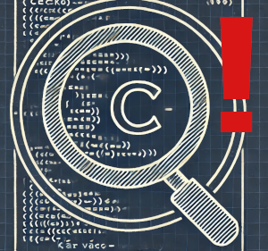
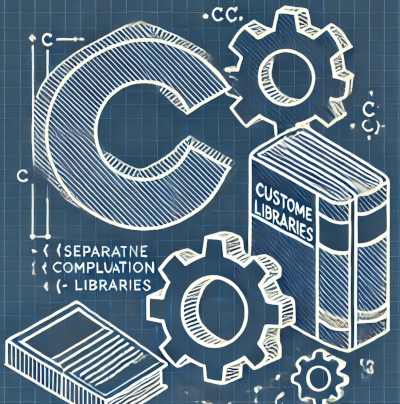
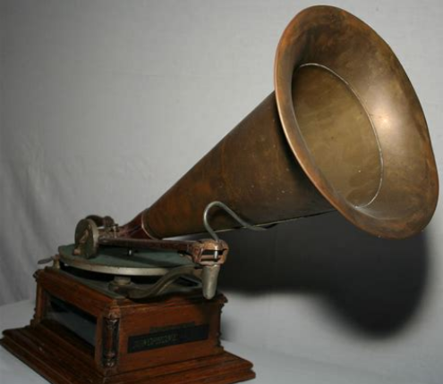

Pro výuku mikroprocesorové techniky používáme v současné době mikroprocesory řady STM8S.
Dokumentace¶
Celá řada STM8S používá stejnou sadu periferií. Jejich popis najdete v reference manuálu zde.
Různé čipy pak obsahují různou sadu těchto periferií. Co přesně se nachází na kterém čipu (plus další specifické věci) lze najít v datasheetu:

Přehled jednotlivých čipů jednotlivých řad rodiny STM8S pak najdete zde:
Hardware¶
- viz sekce Projektové úlohy.
Návody¶
Zde je malý rozcestník návodů; některé jsem vytvořil já, některé Michal Dudka, některé Honza Vykydal.
 Céčko – pác věcí, kterých byste si fakt měli všimnout
 Oddělená kompilace a vlastní knihovny
 Generování zvuku – základy
Michal Dudka píše skvělý web o programování mikrokontrokérů: http://elektromys.eu. V sekci STM8 najdete spoustu pro nás zajímavých věcí:
- Vstupy a výstupy 1 – základy
- Vstupy a výstupy 2 – tlačítko
- Vstupy a výstupy 3 – logické úrovně
- Vstupy a výstupy 4 – PullUp rezistory
- Vstupy a výstupy 5 – Open-Drain
- Ovládání displeje s MAX7219
- Clock
- Alfanumerické LCD
- Knihovna milis – “Multitasking”
- Stavový automat
- Nábojová pumpa
- Buzení 7segmentového displeje
- AD převodník
Honza Vykydal pak napsal:
Ze dílny Michala Dudky pochází tyto pro nás zajímavé články:
Další velice cenné informace nejdete v sekcích:
Vývojové nástroje¶
Vývojové nástroje jsou IMHO největší slabina platformy STM8,
ale při troše snahy se to dá :). Co se ale ST povedlo, to je nástrtoj
STM8CubeMX.
Doporučuji si ho nainstalovat. Není nijak klíčový, ale hodí se.
OpenSource nástroje nejen pro Linux¶
Celou problematiku jsem zpracoval v samostatném návodu: Vývoj STM8 s OpenSource nástroji. Ve zkratce to vypadá takto:
- Kompilátor SDCC
- Jako vývojové prostředí doporučuji VSCodium
- Toolchain pro kompilátor SDCC a GNU Make: https://gitlab.com/spseol/mit-no/STM8S-toolchain
- Starší anglický návod s několika mouchama: https://github.com/hbendalibraham/stm8_started
Cosmic STM8+Eclipse balíček pro Linux¶
Zatím je vše ve fázi testování. Zveřejněno v lednu 2022: https://www.cosmicsoftware.com/download_stm8_eclipse.php Projekt vypadá velmi slibně.
Nástroje pro M$ Windows¶
- Vše velmi hezky zpracoval Michal Dudka na Elektromyši. Součástí je i vzorový projekt s knihovnami pro STM8S103, STM8S105 a STM8S208.
- Jako vývojové prostředí leze použít STVD s komipilátorem Cosmic.
- Oba nástroje je možné bezplatně používat, když se zaregistrujete. Bohužel nejsou ani jeden OpenSource.
Další užitečné nástroje¶
- The Dot Factory
- Generátor obrázků a fontů pro maticové displaye
- http://www.eran.io/the-dot-factory-an-lcd-font-and-image-generator/
Odkazy¶
- http://www.fit.vutbr.cz/~martinek/clang/
- http://jaknaprojekty.davidm.cz/
- https://www.tutorialspoint.com/cprogramming/
- Wikibook Programuje v jazyce C.